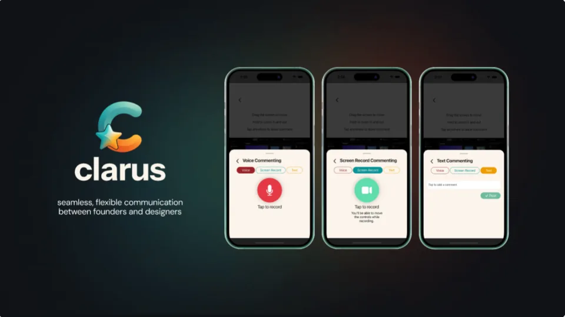
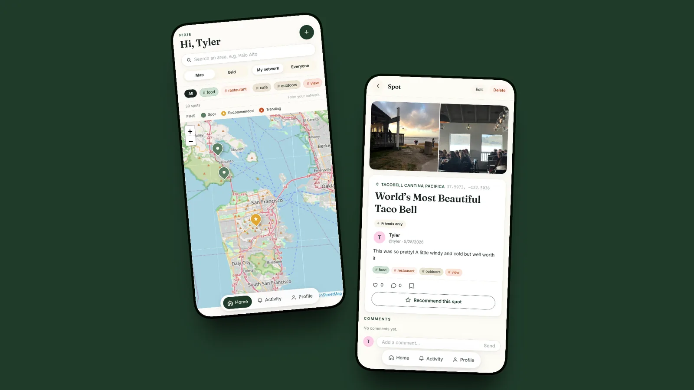
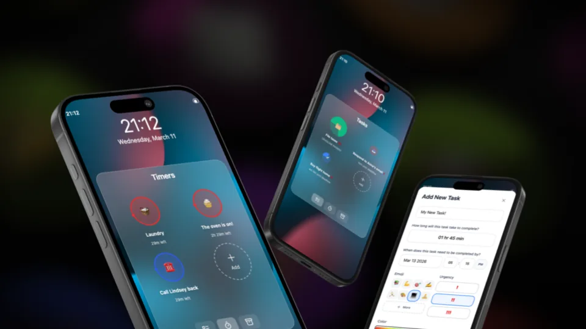
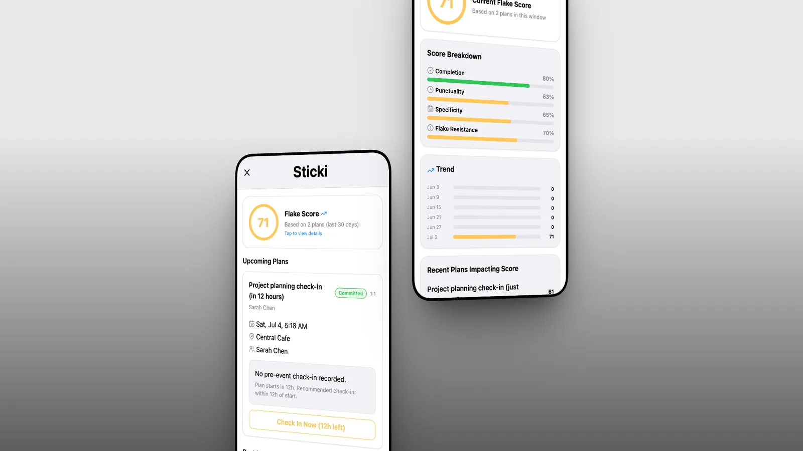
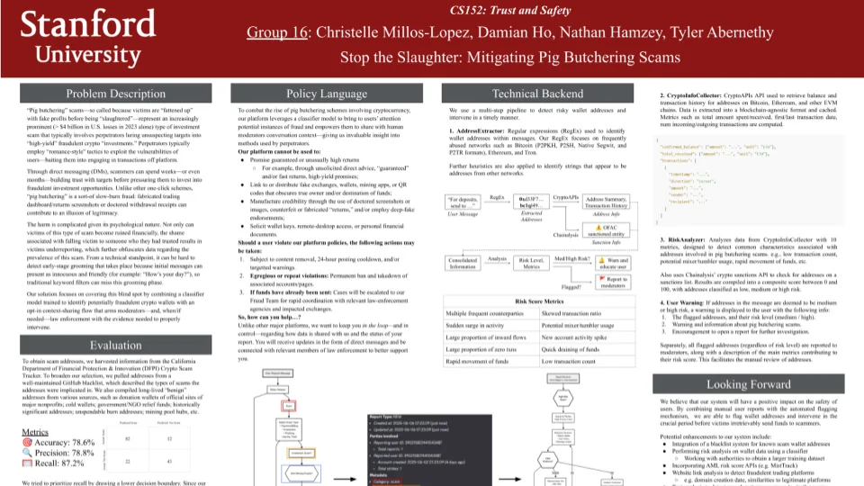
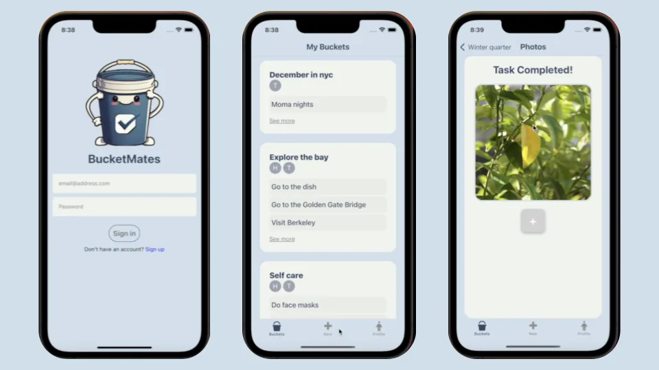
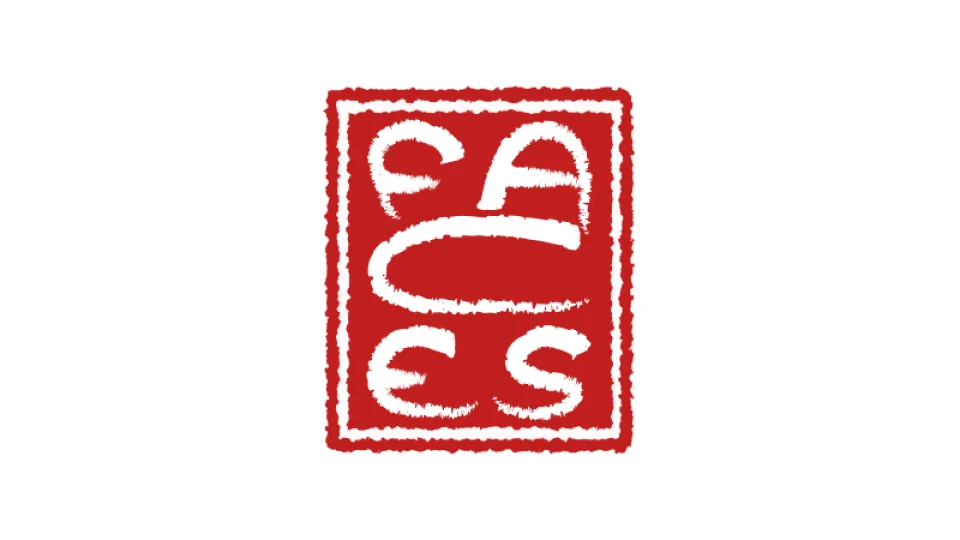
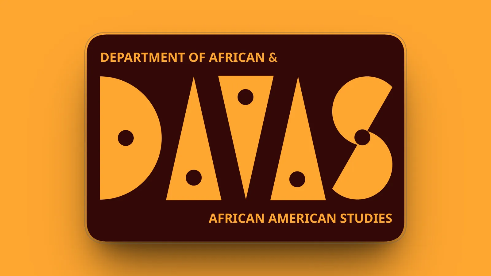

Clarus
Mobile app giving founders real control in the design process.

Pixie
Webapp helping you discover experiences through the eyes of people you actually trust.

Spherical
A task management widget surfacing easily forgotten to-dos.

Sticki
Design research project on why people flake on social plans, prototyped as an app to promote follow-through.

Pig Butchering Scam Detection
Intervention to detect long-term investment fraud before money changes hands.

BucketMates
React Native mobile app for creating bucket lists with friends.

FACES Visual Identity
Logo redesign for Stanford student organization.

DAAAS Merch Design
Winning design for t-shirt and sticker competition.